Machine Learning with Ames, IA, Housing Prices
Background
Given 79 explanatory variables, an identifier, and a target variable describing 1460 houses in Ames, IA, the objective of this Kaggle competition is to develop a model to accurately predict home sale prices for 1459 homes in the test dataset. A summary of the data can be found here.
The data are pre-split into training and test data sets. The former has a column with sale prices, while the latter does not.
I. Initial Data Cleaning
The variables from the raw training data were categorized as character, double, or integer types when read into R. The following cleaning steps were taken prior to a deeper exploration of the data:
- column names were converted from snake to camel case
- garage_yr_blt was populated with -1000 if the value was not applicable and NA if missing
- not applicable values were populated with a variable-specific character (e.g., “NG” for “no garage”, “NB” for “no basement”) for multiple variables (e.g., garage_type, garage_finish, bsmt_cond, bsmt_qual)
- all character variables aside from id were converted to (unordered and ordered) factors (Table 1)
II. Preliminary Data Checking
Data were checked by looking at the summary information.
Unsurprisingly, id is the only character variable; it has no missing values and all values are unique (Table 2a).
There are 46 factors–23 unordered and 23 ordered–and only four have missing values (Table 2b). Numbers of factor levels (classes/categories) range from 2-25.
There are 34 numeric variables, including the target variable (Table 2c). Only two variables contain missing values. Many of the variables (e.g., bsmt_fn_sf1, bsmt_half_bath) contain high frequencies of 0s as indicated by the quartiles.
III. Missingness
A. Assess missingness
Missingness of training data were first visualized.
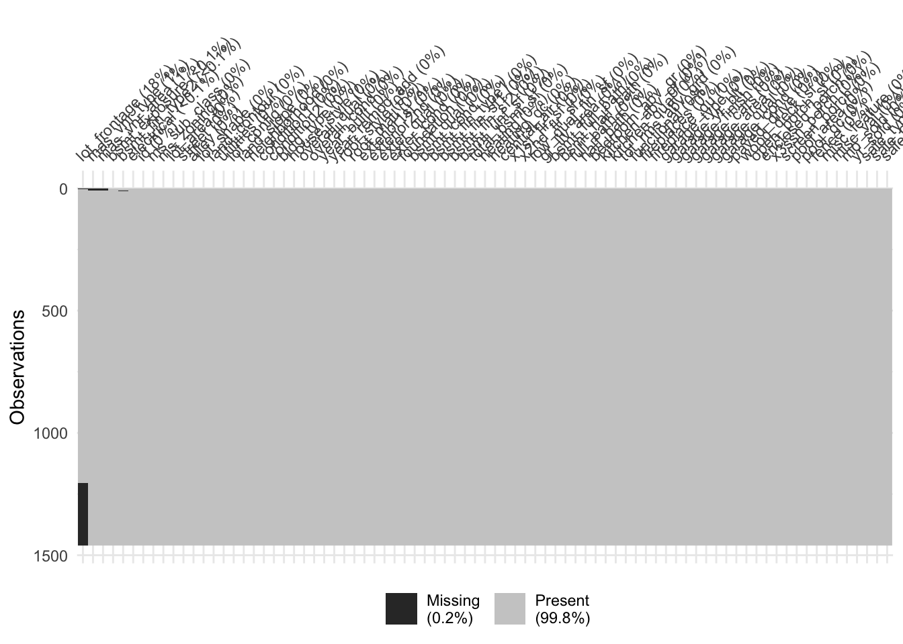
Figure 1 shows that only 0.2% of data are missing and that most of the missingness occurs in one variable.
Let’s look more closely at variables with missing data.
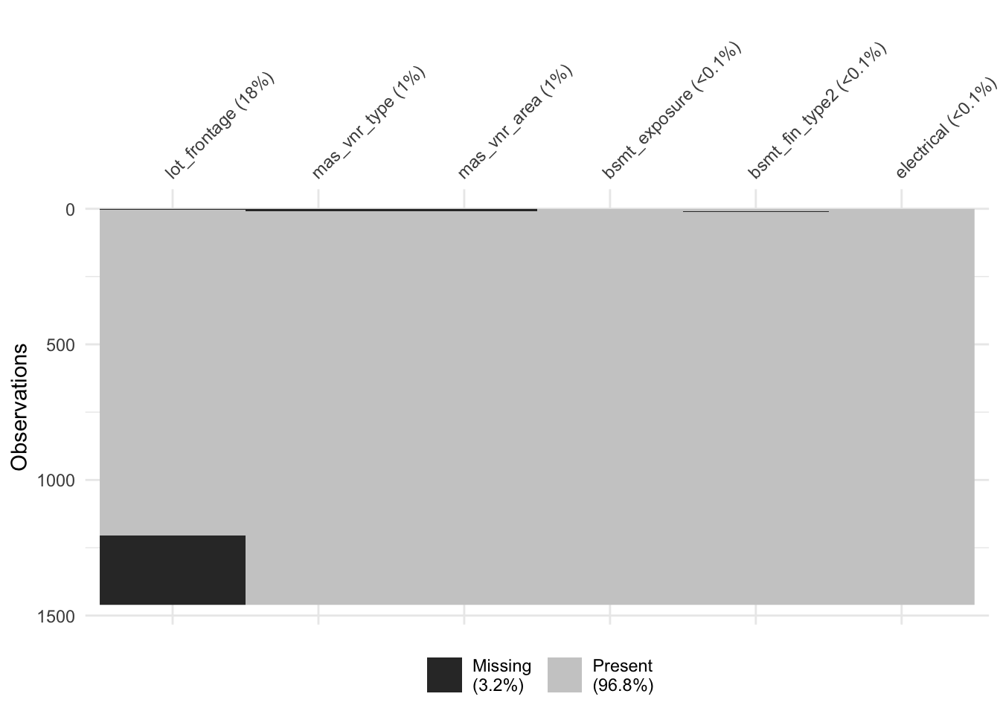
Focusing on columns with missingness (Figure 2), lot_frontage has 18% missing values, mas_vnr_type and mas_vnr_area each have about 1% missing values, and the remainder have less than 0.1% missingness.
Let’s examine missingness by rows.
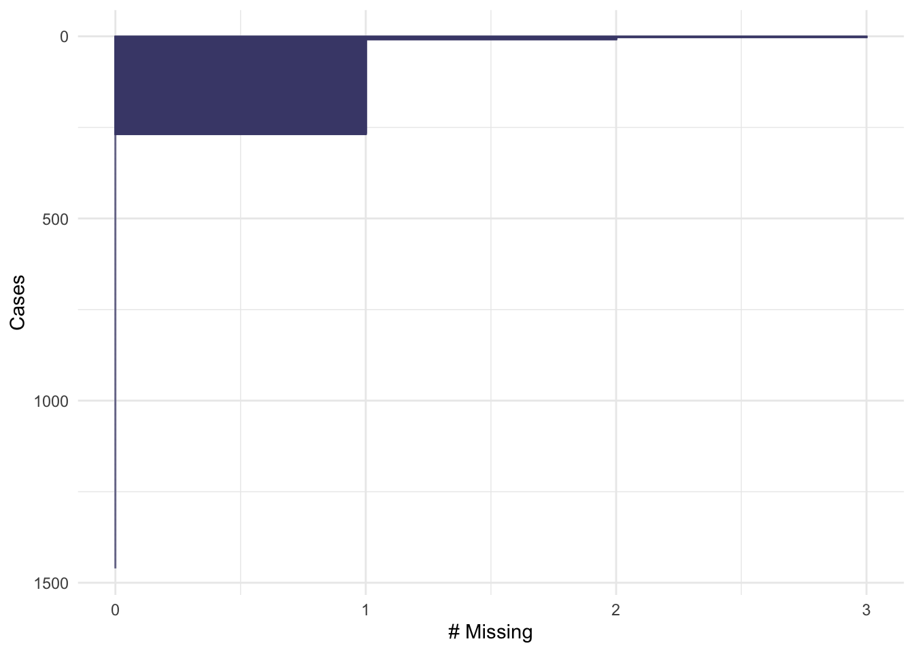
Figure 3 shows that by far most observations lack a missing value and for those that have at least one NA, it’s overwhelmingly just one.
It’s also important to note how missing values co-occur in the training data.
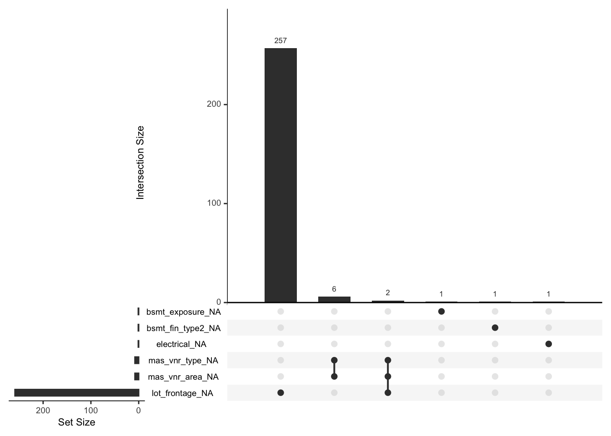
Figure 4 indicates that mas_vnr_type and mas_vnr_area have identical patterns of missingness.
Let’s determine the specifics on number and percent missingness by predictor to better determine patterns of missingness.
There are only six predictors with missing values and as mentioned before lot_frontage has the greatest proportion of missing values with nearly 18% values absent (Table 3).
Let’s evaluate the three predictors with the most missingness to determine whether missingness should be considered ‘missing at random’ (MAR) or ‘missing completely at random’ (MCAR).
B. Determine patterns of missingness
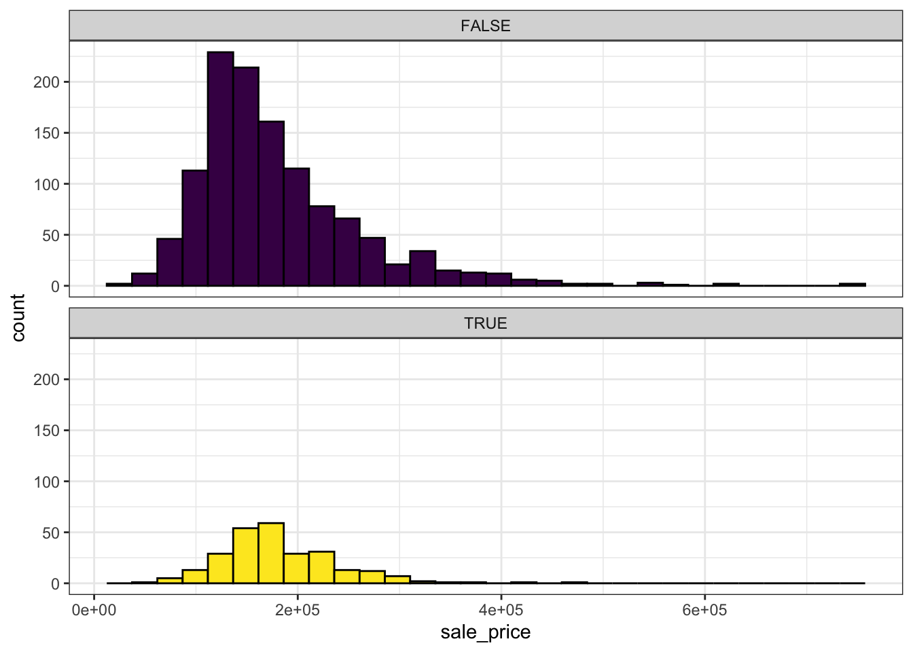
Although these distributions are similar, the plot where lot_frontage is missing is shifted slightly left (Figure 5a).
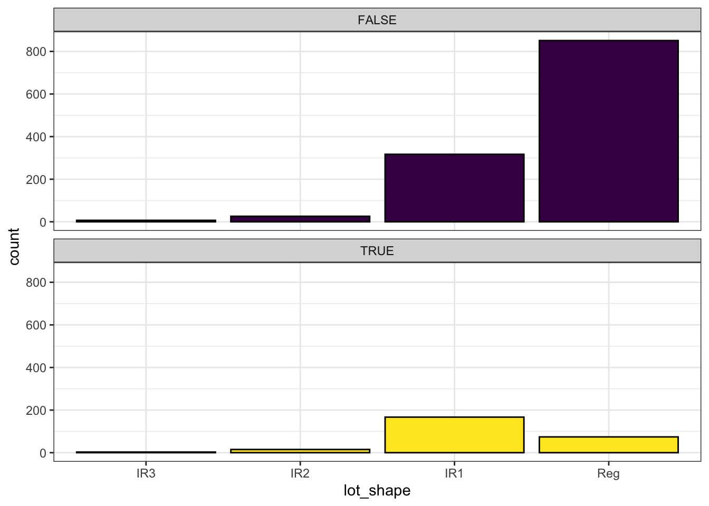
The frequency distributions of lot_shape by presence/absence of lot_frontage clearly differ (Figure 5b).
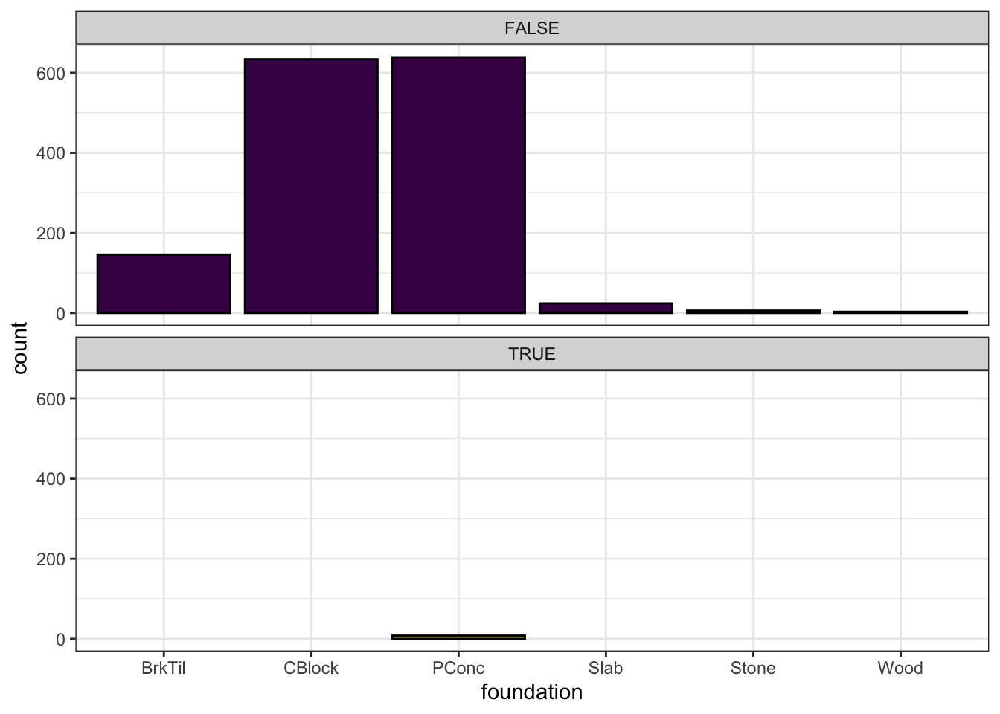
As indicated in Figure 4, mas_vnr_type and mas_vnr_area have the same pattern of missingness, so only one needs to be assessed. Here, the pattern of foundation (a related variable) frequencies differed when mas_vnr_type was present or absent.
C. Impute values
Given all of these results, the data do not appear to be MCAR and thus should be considered MAR (note: MNAR would require deeper investigation and gathering more data, which is beyond the scope of this project). Multiple imputation is a reasonable approach for MAR data. The classification and regression tree (‘cart’) approach was used to impute values.
The pre- and post-imputation dataframes were visualized.
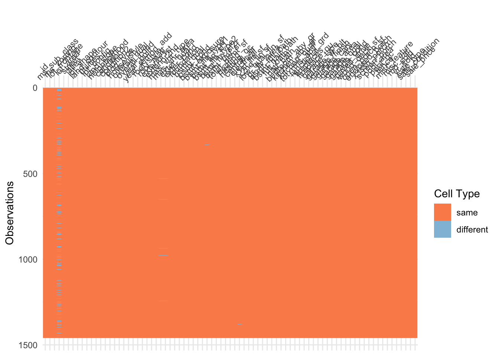
Unsurprisingly, the most frequent changes (i.e., NA to non-NA values) occurred within lot_frontage (Figure 6).
A closer look at lot_frontage shows the relationship between this predictor and sale_price with and without imputed values.
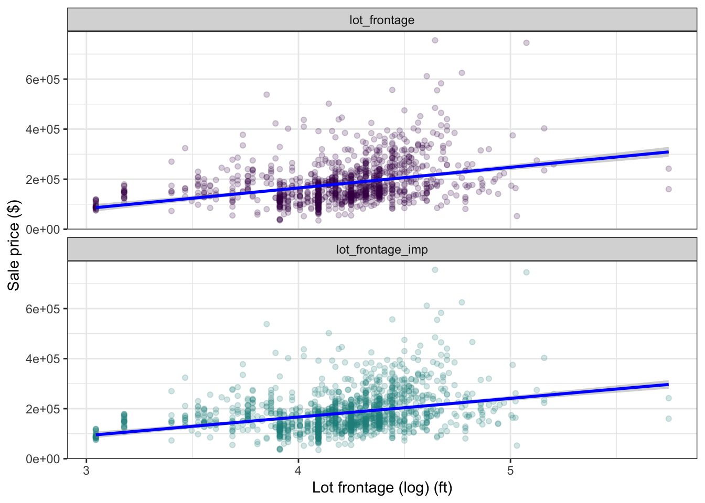
Figure 7 indicates similar relationships between lot_frontage and sale_price without or with imputed lot_frontage values.
IV. Feature Selection
After a successful imputation of missing values, feature selection was conducted. Here factor variables that display constancy or low ‘variance’ and highly correlated variables were dropped.
A. Drop low ‘variance’ features
Low ‘variance’ factor variables means that one category composes at least 98% of the values. Thus, less than 2% of the remaining values for that factor are associated with one or more other categories. There’s a couple reasons to drop these predictors:
- In v-fold cross-validation, there needs to be at least one value of each factor level in each fold. If infrequent factor levels are very rare, then this may not occur or the number of folds may need to be capped at a low number to accommodate this.
- Even if item 1 is accomplished, a small number of a given factor level in one or more folds may lead to over-fitting due to small sample size
Five factors exhibited constancy: condition2, pool_qc, roof_matl, street, utilities (Table 4).
V. Feature Engineering
A. Rare-label encoding
Although factors (both unordered and ordered) that exhibited constancy were dropped, many of the remaining ones still contained rare levels. In those cases, the rare levels should be combined together or binned with more common levels such that no level should be considered rare (i.e., composes < 2% of observations). This feature engineering approach was performed for all applicable factors by 1) considering each level’s relationship with sale_price, 2) combining levels by similarity of type, 3) using domain knowledge, and/or 4) simply combining rare levels into some type of ‘Other’ category.
1. Unordered factors
One example of rare-label encoding involves lot_config.
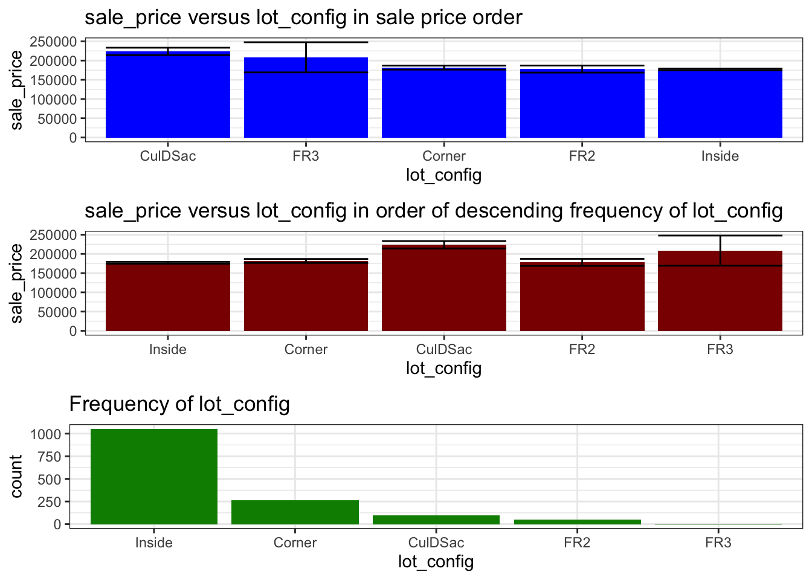
Table 8 shows that category ‘FR3’ occurs less than 0.3% of the time, well below the 2% threshold. Given that ‘FR3’ is so rare, its relationship with sale_price is less important (which is indicative of the large error bars in the top two plots; Figure 9); thus, it was binned with ‘FR2’ (as these are similar in shape and frequency) to make ‘FR2_3.’
Below is a summary of how unordered factor levels were combined (Table 9).
2. Ordered factors
Below is a summary of how ordered factor levels were combined (Table 10).
B. Feature scaling
Feature scaling is performed on numerical predictors to normalize their ranges such that these predictors do not have a differential impact on the model simply as an artifact of differences in scales (ranges).
Normality of predictors is important to understand before deciding which scaling technique to employ. This was assessed visually using q-q plots.
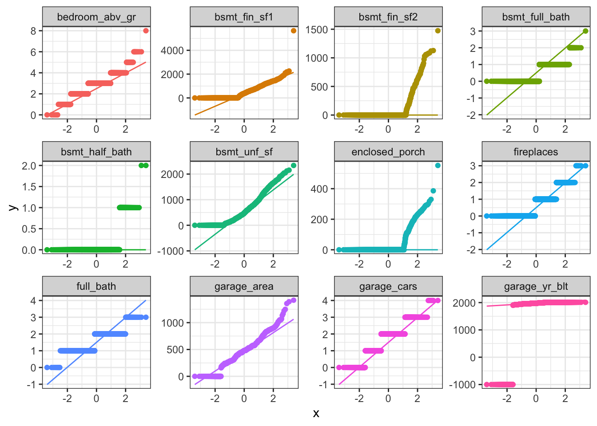
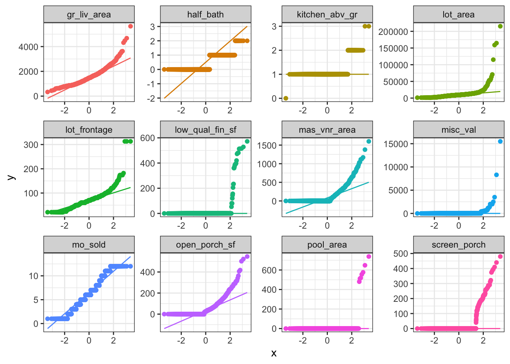

Many of the q-q plots (e.g., bsmt_fin_sf1, garage_area, lot_area) raise concerns about normal distributions (Figures 10a-c).
Normality was also assessed statistically with Shapiro tests.
All numerical predictors were not normally distributed (p < 0.05) per the results of the Shapiro tests (Table 11).
Thus, given both sets of evidence, normalization is an appropriate feature scaling technique for these predictors. This transformation was applied to the training data.
VI. Cross-Validation and Modelling
Following initial data cleaning, imputation, feature scaling, and feature engineering, the training data underwent cross-validation.
A. Create folds
The training data were split into 10 folds prior to model fitting.
B. Model training data
Three different model types were used in modelling the house price data: decision tree, random forest, and K-nearest neighbor.
The models were fit to the training data and their metrics were evaluated.
The root-mean squared error (RMSE) and r2 indicate that the random forest model performed the best during cross-validation and thus was selected for hyperparameter tuning (Table 12).
C. Hyperparameter tuning and model selection
Given computational limitations, only two of three parameters were tuned–tree_depth (maximum depth of the tree) and min_n (minimum number of data points in a node for further splitting)–using five levels each in a regular grid (Table 13).
The random forest model was tuned using these hyperparameters on the cross-validation folds.
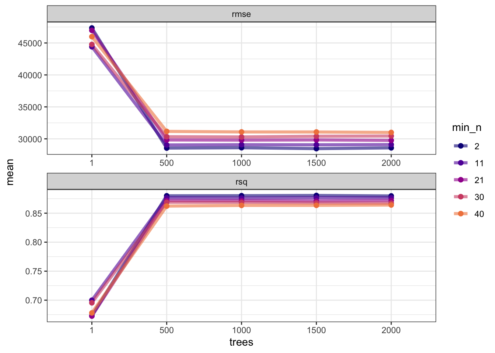
These results indicate that the random forest model with trees (number of trees) = 2000 and min_n = 2 performed the best in cross-validation (Fig. 11; Table 14).
D. Model diagnostics
Variable importance was assessed for the selected model.
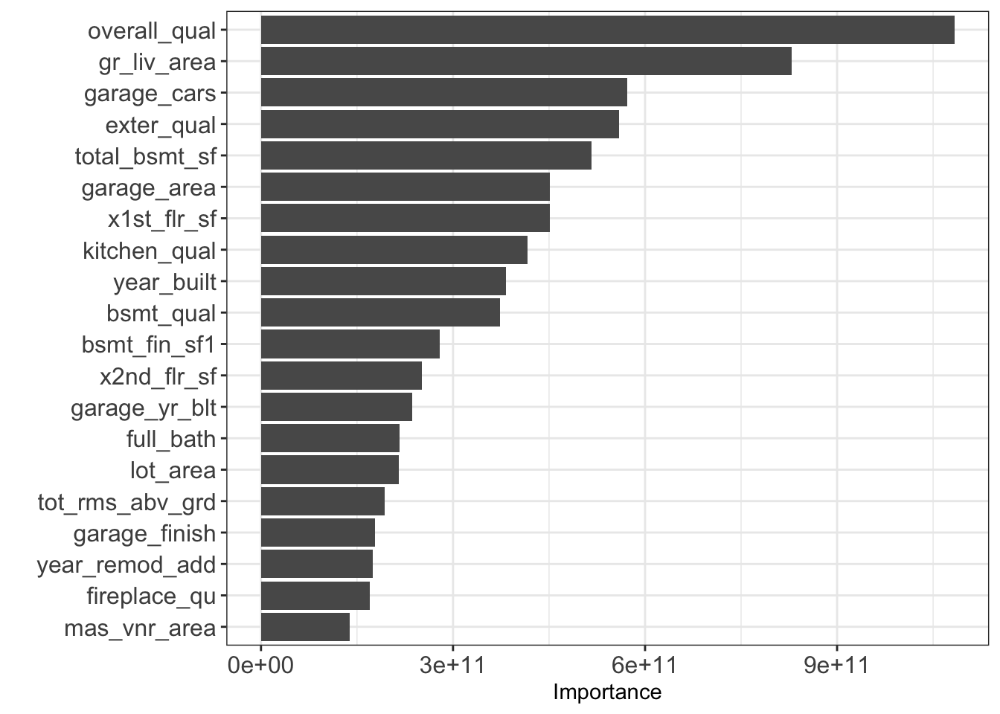
These results indicate that overall_qual was the most important variable with an importance value of 1.09 x 1012 followed by gr_liv_area and garage_cars (Table 15; Fig. 12).
Here is a boxplot showing the clear relationship between overall quality (overall_qual) and sale price (Figure 13).
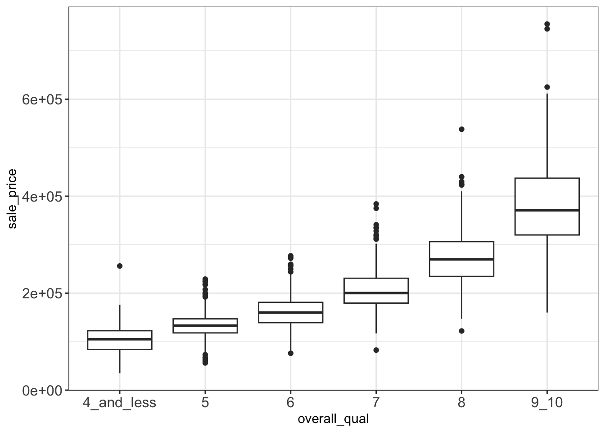
VII. Prepare Test Data
The test data were prepared in the same manner and using the same methods as the training data (except for creating cross-validation folds).
A. Initial data cleaning
The same data cleaning steps used on the training data were also applied to the test dataset: 1) converting variable names from camel case to snake case, 2) garage_yr_blt was populated with -1000 if the value was not applicable and NA if missing, 3) all character variables aside from id were converted to factors, and 4) not applicable values of factors were converted to variable-specific classes (e.g., “NG” for “no garage”).
B. Missingness: assessment and imputation
Missingness in the test data was assessed visually.
Results show that like the training data, lot_frontage had the most missing values (15.5%), followed by mas_vnr_type and mas_vnr_area (with roughly 1% each) and finally 16 other variables had fewer than 0.3% missing values (Table 16).
Missing values were imputed using a classification and regression tree.
Note that two utilities values remained missing following imputation (Table 17), but this variable would subsequently be dropped due to low variance.
D. Feature engineering: rare-label encoding and feature scaling
Rare feature classes from the test data were binned in the same manner as the training data (Tables 9 & 10) and numerical features were normalized.
Now that the test data has been prepared in the same manner as the training data, model evaluation can begin.
VIII. Model Evaluation
A. Predict sale prices
Using the finalized random forest model with trees = 2000 and min_n = 2, the model was evaluated on the test data. The sales_price values were predicted for each row of the test data.
B. Quantify performance on test data
The predicted sales_price values associated with each id were submitted to Kaggle for scoring. This model scored 0.16399, which is a measure of the RMSE on logged predicted and observed sales prices.